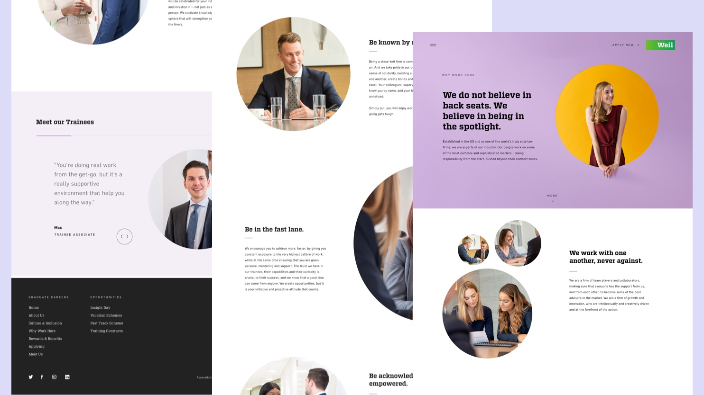
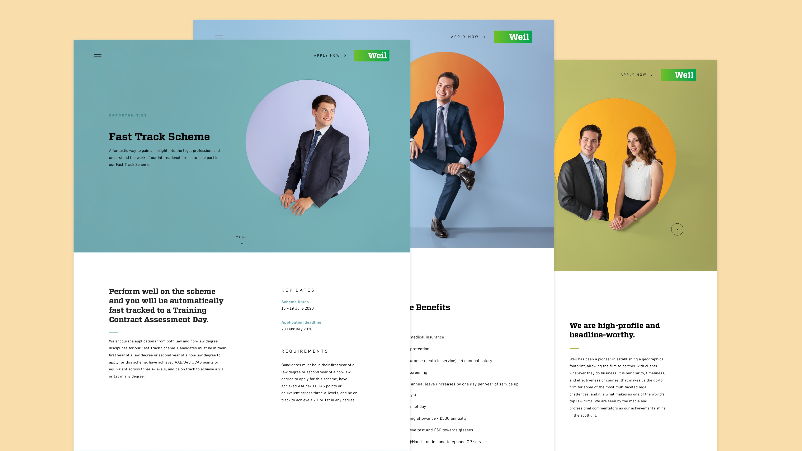
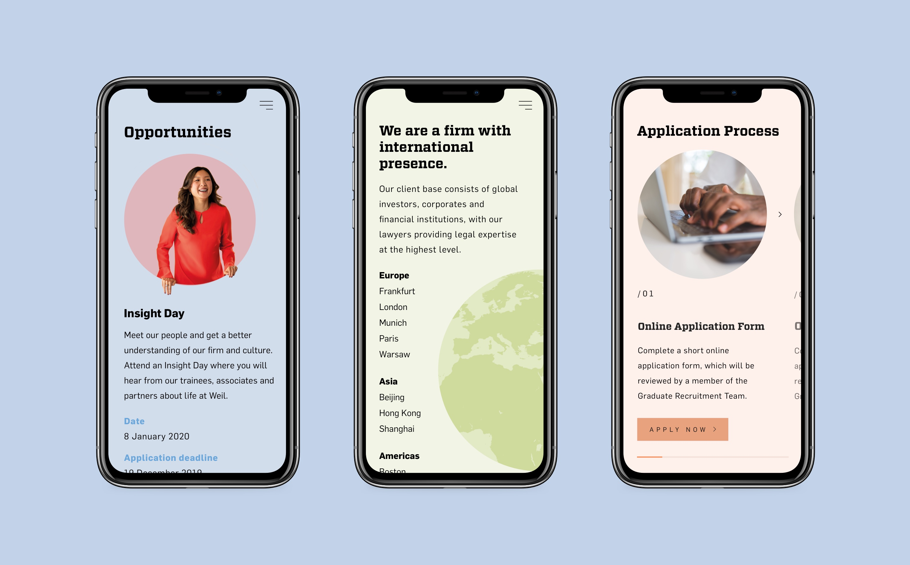
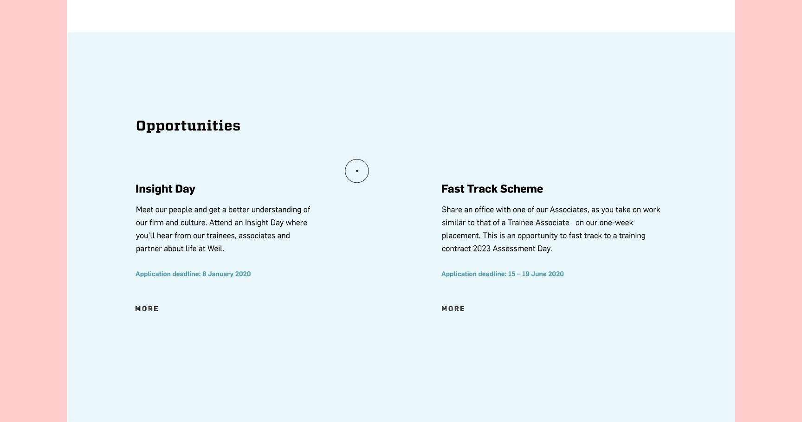
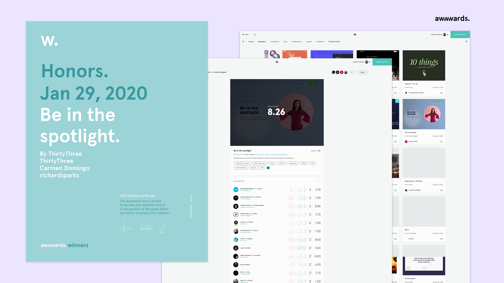
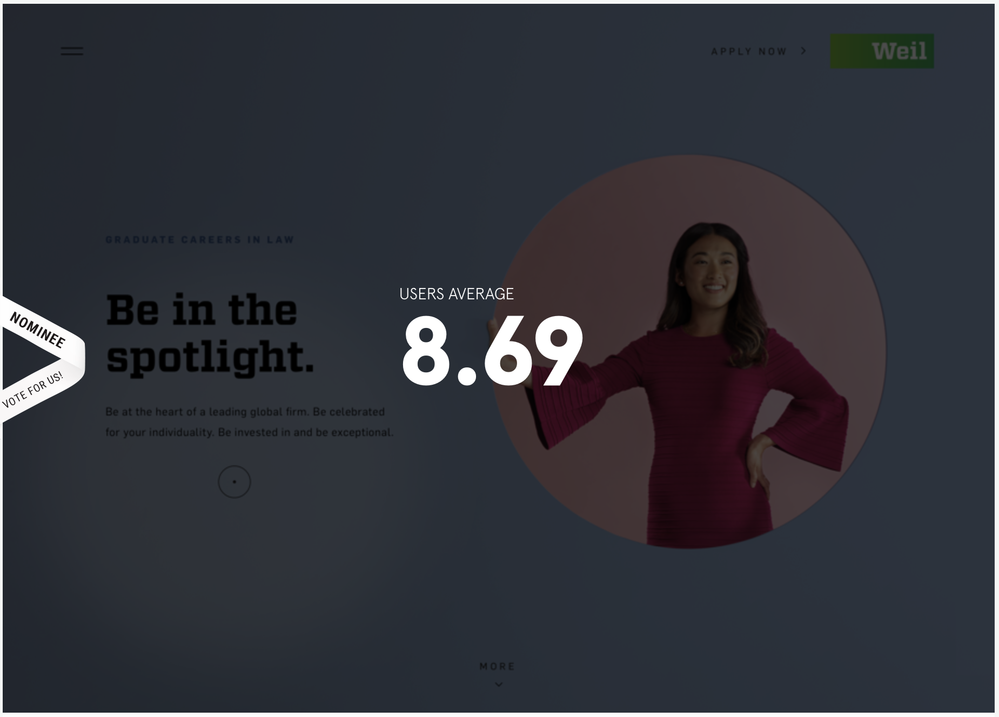

WEBSITE DESIGN – UX, UI
Weil – Be in the Spotlight
The brief
Weil Gotshal & Manges LLP is a leading player in the UK legal market and is consistently regarded as one of the most successful London offices of a US-based law firm. Aiming to become a strong competitor among London finest law firms, they needed a new graduate recruitment website that would help them attract the best and brightest law graduates.



The challenge
To create a modern and young site that still felt in line with Weil as a company. As the lead digital designer in this project, my job was to implement a new art direction, and to create a great digital experience for graduates interested in starting their career in law. We kicked off the project with a research phase – defining personas and user journeys, then building the information architecture (IA) for the new site.
Weil’s strategy is focused on recruiting and retaining exceptional talent at all levels. The firm’s people celebrate diversity and inclusion, so we really wanted to make sure that everyone was represented by doing a photoshoot in-house with the actual team of graduates at Weil.
Weil’s strategy is focused on recruiting and retaining exceptional talent at all levels. The firm’s people celebrate diversity and inclusion, so we really wanted to make sure that everyone was represented by doing a photoshoot in-house with the actual team of graduates at Weil.


The solution
‘Be in the Spotlight’ became the creative concept for the graduate campaign – meaning they would only move forward by putting their people at the heart of what they do. To reinforce this visually, we integrated this into the UI design and animation.
A spotlight-like effect on the cursor would allow the user to interact with the information throughout the website. To support Weil's positioning as a young and sophisticated law firm, we created a versatile and fun pastel colour palette.
We wanted to make the applicants feel more at ease and excited about the journey they were about to start, so we added a bit of playfulness to the UI elements and interactions – masks and parallax effects in the imagery, and click and drag features to explore the content.
A spotlight-like effect on the cursor would allow the user to interact with the information throughout the website. To support Weil's positioning as a young and sophisticated law firm, we created a versatile and fun pastel colour palette.
We wanted to make the applicants feel more at ease and excited about the journey they were about to start, so we added a bit of playfulness to the UI elements and interactions – masks and parallax effects in the imagery, and click and drag features to explore the content.

The results
We were really pleased to see higher engagement throughout the site, a 20% increase in visit-to-apply and more informed applicants. The project was also awarded with an Honourable Mention from Awwwards, and an average score of 8.69.


Role Lead Digital Designer
Responsibilities end-to-end website design (discovery, IA and sitemap, wireframing, design and prototyping)
Launch date 2020
Responsibilities end-to-end website design (discovery, IA and sitemap, wireframing, design and prototyping)
Launch date 2020